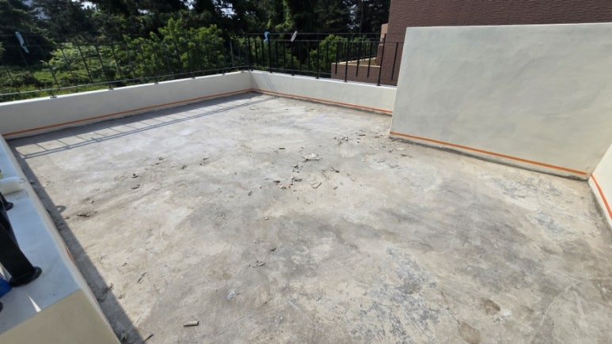
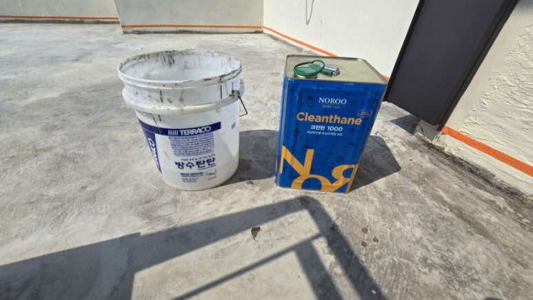
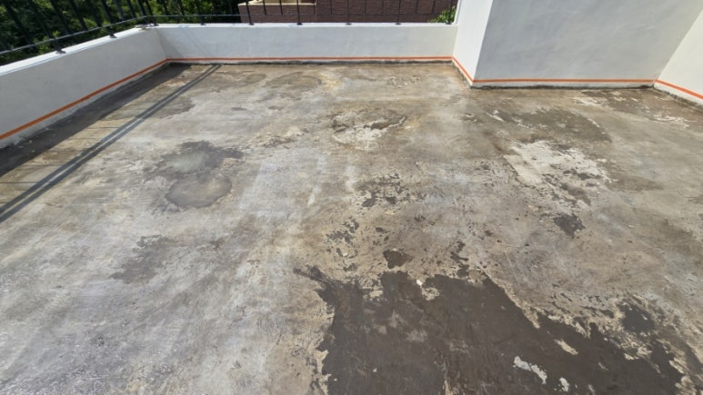
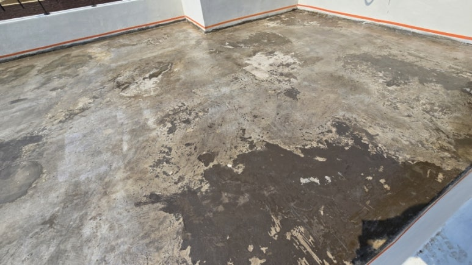
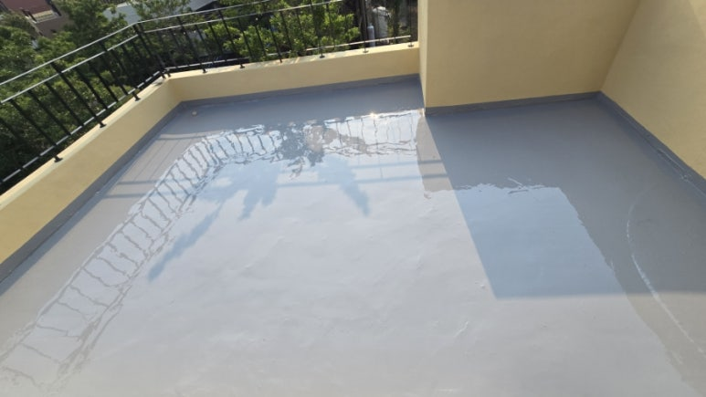
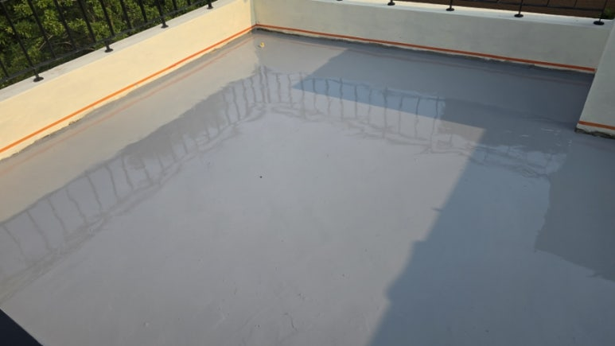
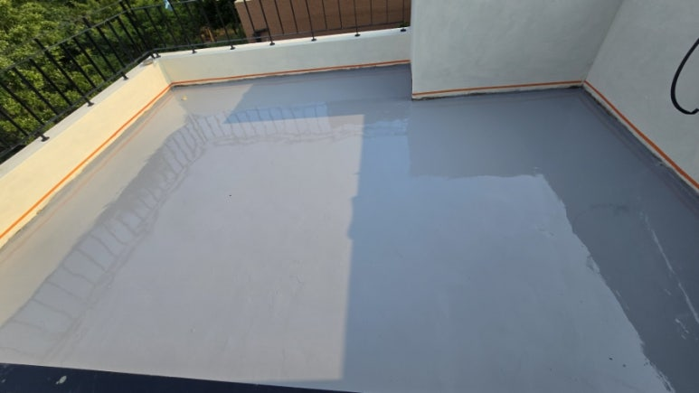

ARCHIVE
옥상 탄성우레탄 방수 시공과정 - 바탕정리·하도·씰란트·중도
옥상 바닥의 구배를 확인하고 바탕을 정리한 뒤 우레탄 하도, 씰란트, 탄성우레탄 중도 순서로 시공한 옥상 방수 사례입니다. 상도는 공정 설명으로 함께 정리했습니다.

현장 개요
• 옥상방수 의뢰로 작업한 현장입니다. 바탕면의 구배를 확인하고 바탕 청소를 먼저 했습니다.
시공 과정
1. 바탕 정리: 스크래퍼나 헤라 등으로 표면을 정리한 뒤 청소했습니다.
2. 줄눈 커팅(필요한 경우): 콘크리트 거동에 따른 균열에 대비해 줄눈을 커팅합니다.
3. 우레탄 하도: 롤러로 도장하며, 콘크리트에 하도가 많이 흡수되면 묽게 희석해 2회 이상 얇게 도장합니다. 이번 현장은 노루표 크린탄1000으로 하도 시공했습니다.
4. 씰란트 작업: 줄눈 커팅부와 균열부를 우레탄 씰란트로 채웁니다.
5. 우레탄 중도: 노루페인트 크린탄 2100을 사용했고, 1차 스크래핑 도장 후 핀홀은 씰란트로 눈매꿈하고 2차 본도장을 하는 방식입니다.
6. 우레탄 상도(공정 설명): 자외선에 의한 중도재 황변을 막기 위해 롤러로 상도를 도장합니다. 이 현장의 상도 시공 사진은 없습니다.
시공 사진
• 시공 전 바탕 상태, 하도 시공, 중도 도장 사진을 작업 순서대로 실었습니다.
BEFORE시공 전

PROCESS시공 중





